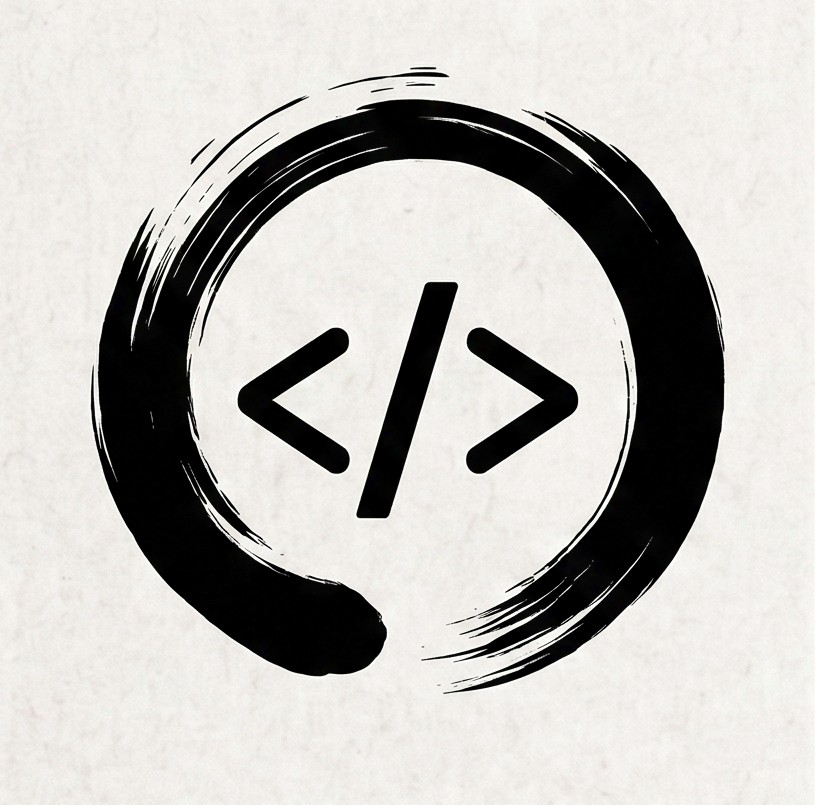

Codō
The Way of Code — A developer’s notebook on code, tools, and continuous growth.

Hey, I'm Lawin, a Business Information Technology student. I created Codō to track my ongoing journey and skill growth across web development. Along the way, it became the reference tool I always wanted: just the essential commands you actually use, broken down in plain English. Keep it pinned in a tab and take whatever is useful.
What You Can Find Here
This website is currently under construction, but it will first have basic Git and Bash command references. The commands will be organised into separate pages to keep them easy to browse and quick to reference. Stay tuned!
Suggest something fun or useful
Got an idea or spotted something missing? Send it over and I'll see if I can add it..